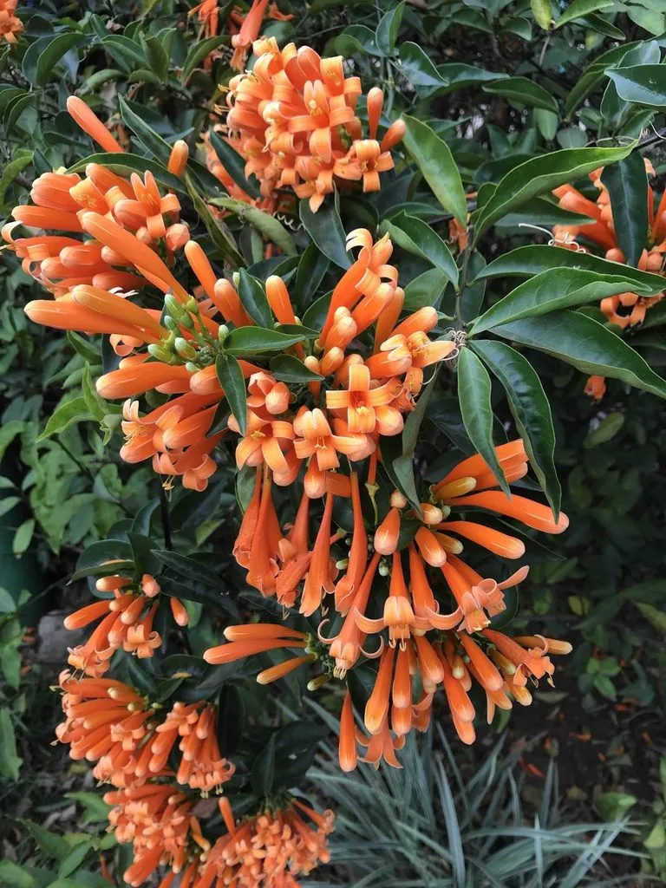

灌木与花木 · 植物界
炮仗花 Pyrostegia venusta

原产南美的常绿藤本，冬春开花时橙红色花朵成串下垂、形似鞭炮，是南方庭院棚架与围墙的热门花木。
- 分类
- 门被子植物门纲木兰纲目唇形目科紫葳科属炮仗藤属
- 栖息环境
- 海拔 800 米以下的热带亚热带地区，喜高温多湿、光照充足
- 地理分布
- 原产南美巴西、巴拉圭等地，中国华南地区广泛栽培
- 保护级别
- 暂无评估；中国未列入国家重点保护野生植物名录
物种志
炮仗花为常绿木质藤本，茎长达 10 m 以上，靠卷须攀附生长；叶片对生，复叶，小叶 3 枚，卵状披针形。花期 12 月至翌年 4 月，圆锥花序顶生，花冠管状、橙红色，长 6–8 cm，先端 5 裂并反卷，成串下垂，形似一串串鞭炮，故得名；蒴果细长，成熟时开裂，种子具翅。
炮仗花原产南美洲巴西、巴拉圭等地，中国广东、广西、福建、海南、云南等地栽培，喜高温多湿、光照充足，适宜疏松肥沃、排水良好的土壤，不耐寒。冬春时节橙红色的花串挂满棚架、围墙与屋顶，花期长、花色热烈，是南方庭院与城市景观中最受欢迎的藤本之一；常用于花架、廊架、围墙绿化，也可盆栽。茎、叶与花可入药，有润肺止咳之效；炮仗花因花色与花形似鞭炮，在春节前后盛开时更添节庆气氛。
形态与习性
- 株高藤蔓可达 10 m 以上
- 花期12 月至翌年 4 月
- 果期栽培条件下少见结实
- 光照喜光，不耐长期荫蔽
- 水分喜湿润，怕积水
- 土壤疏松肥沃、排水良好的壤土
- 主要用途棚架与围墙绿化、庭院观赏、茎叶花入药
趣味知识
- 炮仗花的花串橙红细长、成串下垂，形似一串串鞭炮，因此得名。
- 炮仗花在冬春时节开放，花期正好赶上春节，增添了节庆气氛。
- 炮仗花靠卷须攀附棚架生长，茎可长达 10 m 以上。
- 炮仗花原产南美，因花色热烈，成为南方庭院最受欢迎的藤本之一。